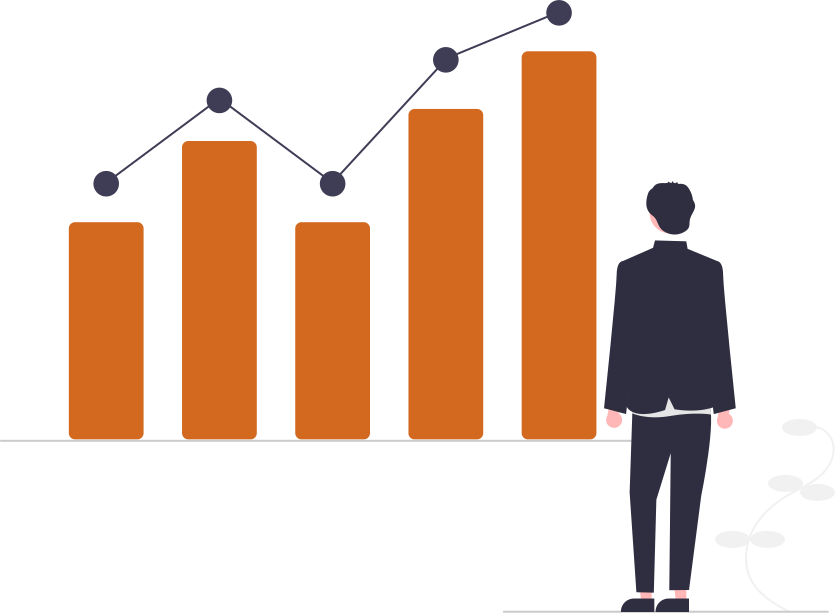

Tubos Triunvirato
Inicio
Nuestros Tubos
Nuestros tubos son fabricados para todo tipo de empresas, especialmente para hilanderias, tintorerias y comestilbes.

Tubos de Carton Tintoreria
Son utilizados para la envoltura de telas teñidas.

Tubos de Carton Hilanderia
Se utilizan para la envoltura de distinta clases de hilos para confeccion de ropas.

Tubos de Carton Comestibles
Se utiliza para la envoltura de papel aluminio, papel manteca y stretch.
¿Sabias que..
Somos una empresa familiar dedicada a la fabricación de tubos de cartón para tintorerias, hilanderias y comestibles.
¿Sabias que..
Tenemos más de 15 años de trayectoria y ofrecemos el mejor servicio y la mejor calidad del mercado.
¿Sabias que..

Protegemos el medio ambiente, todos nuestros residuos son reutilizados para la fabricación de cartón.
¿Como se fabrican nuestros tubos?
Nuestros tubos son fabricados por maquinas automaticas que se dedican pura y exclusivamente a fabricar tubos espiralados de carton de distintas medidas y distintos diametros.